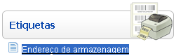
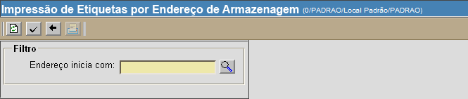
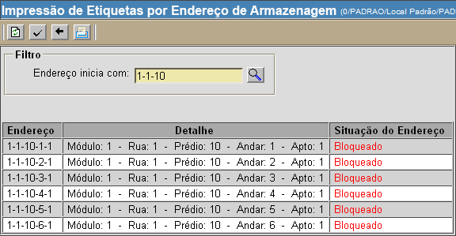
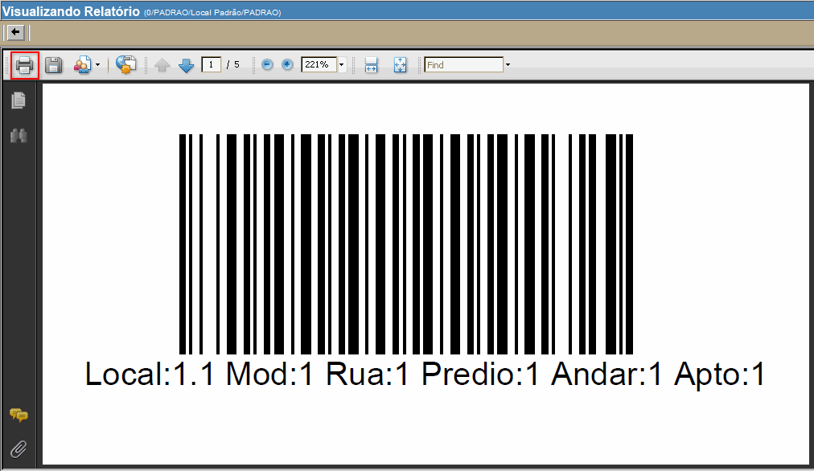

Impressão de Etiquetas por Endereço de Armazenagem [ Voltar ]Utilize este formulário para imprimir etiquetas para endereços de armazenagem. O formulário "Endereço de armazenagem" encontra-se dentro do menu "Etiquetas".

Ao clicar no formulário, o sistema abrirá a seguinte tela: 
Siga os passos abaixo para imprimir as etiquetas: 1º
Passo: informe um ou mais endereços de armazenagem para
a impressão. Para selecionar apenas um
local, clique no botão Por
exemplo: para imprimir as etiquetas de todos os prédios, andares e
apartamentos do módulo 1, rua 3, digite "1-3" no campo "Endereço inicia
com" e clique no botão

Observação: a situação do endereço pode ser OK, Bloqueado ou Desabilitado. Enquanto os endereços bloqueados estão ativos mas com restrições (pode-se realizar movimentações internas, mas não externas), os endereços desabilitados não podem realizar quaisquer tipos de operação.
2° Passo: clique no botão para visualizar os códigos de barras dos endereços exibidos. Utilize a barra de rolagem para visualizar todos os códigos. 
3º
Passo: clique no botão |
 [Procurar]
e selecione o endereço desejado. Ou então, se desejar imprimir
etiquetas
para todos as ruas, prédios, andares e apartamentos de um determinado
módulo, informe no campo "
[Procurar]
e selecione o endereço desejado. Ou então, se desejar imprimir
etiquetas
para todos as ruas, prédios, andares e apartamentos de um determinado
módulo, informe no campo " "OK". Se desejar imprimir etiquetas
para todos os andares e apartamentos de um determinado módulo, informe
o módulo-rua-apartamento e clique em
"OK". Se desejar imprimir etiquetas
para todos os andares e apartamentos de um determinado módulo, informe
o módulo-rua-apartamento e clique em  [Imprimir]
do navegador para processar a impressão das etiquetas.
[Imprimir]
do navegador para processar a impressão das etiquetas.